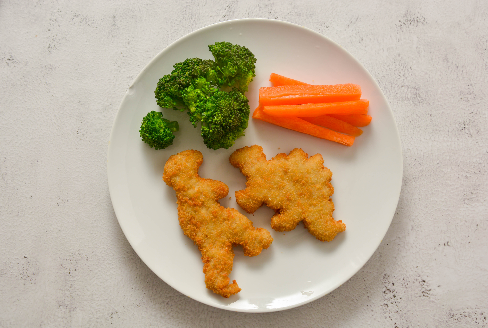

Chicken nuggets have always been a popular snack amongst many people. However, the dinosaur-shaped versions of this snack brings nostalgia and continues to be enjoyed by children till' this day. According to Dawn Hammon in her article, "The Origin Story of Icon Dino Chicken Nuggets," the invention of this childhood joy of a snack was attributed to Cornell University agricultural scientist Robert C. Baker in 1963. He did not patent this delectable treat, but rather distributed the recipe to hundreds of food companies instead (Hammon, 2024). Who knew how successful these adorable dinosaur-shaped nuggets would be? Pair them up with a side of ranch or mashed potatoes with gravy and you have yourself a dinosaur (or perhaps chicken) paradise.